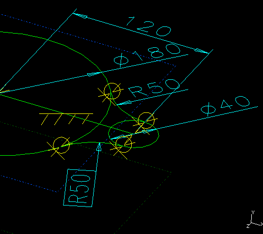

| Next Page | Previous Page | First Page |

SIP on the top Reference Plane.


Focus on the Coordinate Center for the center
of the 180mm diameter circle. Create the line
ensuring it is ground Horizontal. Add the 40mm
diameter circle at the line end. Add the 120mm dimension.



Create two 3 point Arcs. Make them Tangent to the circles. Match the 2 dimensions.
SIP on each Reference Plane in turn, focusing on the coordinate system for the circle center.